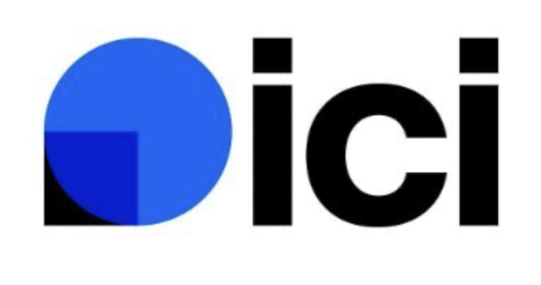

Création M6
La Ruche
L'or liquide de nos apiculteurs.
Couronne aux noisettes torréfiées, miel et zestes d'agrumes, tressée de fruits secs.
Raphaël Bonneau, l'un des plus jeunes boulangers à relever le défi de l'émission de M6, avec sur le plateau nos créations catalanes 100 % fait maison.
À 23 ans, à la tête de trois boulangeries dans les Pyrénées-Orientales, Raphaël compte parmi les plus jeunes candidats de La Meilleure Boulangerie de France. Les caméras de M6 se sont invitées dans le fournil en février 2026 pour filmer le savoir-faire de la maison.
Pendant l'émission, l'équipe a présenté ses créations signatures : La Ruche, Le Rayon d'Or et l'Albercoc, une audace sucrée-salée qui a séduit le jury avec la note de 9/10. Un moment fort pour toute l'équipe, et une belle vitrine pour le savoir-faire catalan.
Raphaël & l'équipe des Pains du Soleil

L'or liquide de nos apiculteurs.
Couronne aux noisettes torréfiées, miel et zestes d'agrumes, tressée de fruits secs.
Un parfum de sous-bois catalans.
Brioche moelleuse et ambrée au miel de châtaignier, la douceur d'un rayon de fin d'après-midi.
Le sucré-salé du Roussillon.
Tarte à l'abricot rouge, jambon Serrano, roquette et fromage. ★ Noté 9/10 par le jury
De la radio nationale à la presse catalane, on a fait parler de la maison, de La Meilleure Boulangerie de France aux diamants cachés dans nos galettes des rois.

ICI RoussillonPassage également relayé par Coulisses TV, Stars Actu et Femin Actu à l'occasion de la diffusion du 7 mai 2026 sur M6.
Les créations vues à M6 et tout le reste vous attendent à Perpignan, Saint-Estève et Cabestany.